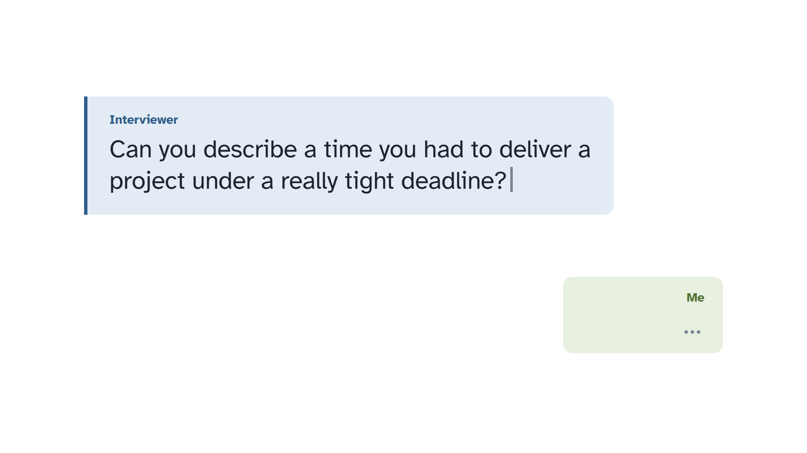
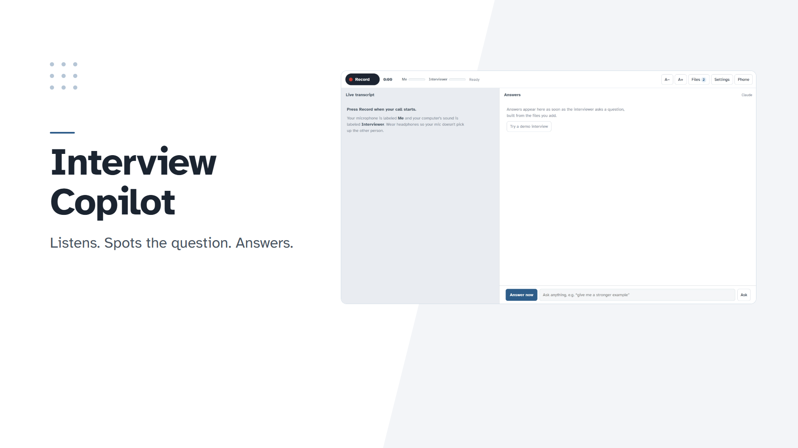
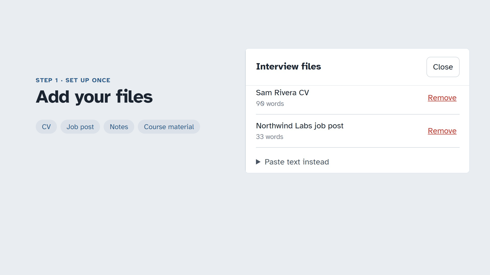
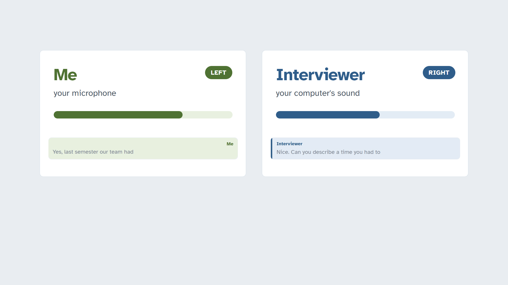
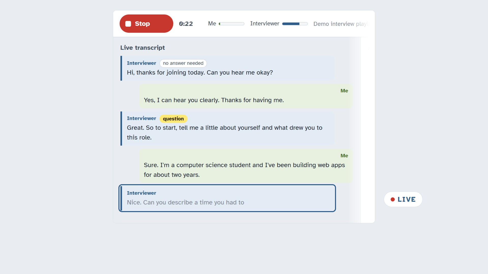
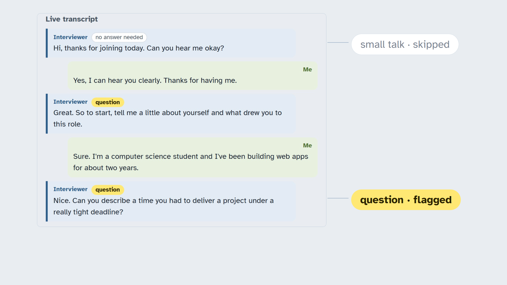
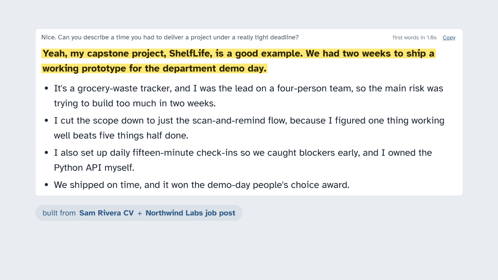
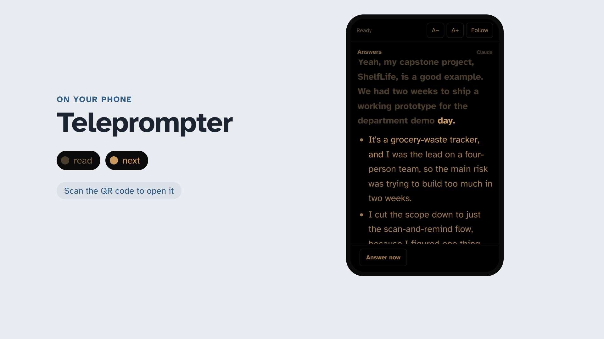
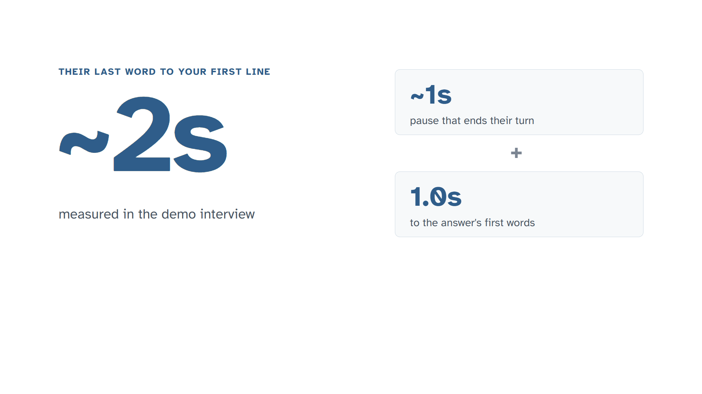
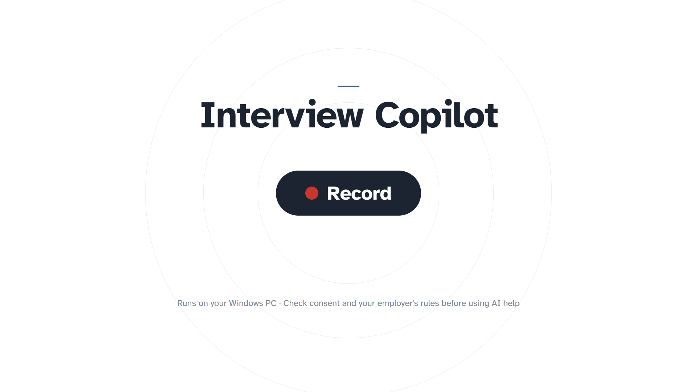

"They ask a tough question. Your mind goes blank." The real demo question types into the blue Interviewer bubble; the Me bubble stays empty.

"Meet Interview Copilot. About two seconds after they finish, your answer is on screen." Title left, the real app window rises in on the right.

"First, add your CV and the job post. Every answer is built from them." The real Files drawer with the two sample documents.

"Press Record. Your mic is Me. Your computer's sound is the Interviewer. Two channels, so it always knows who's talking." Cards open from the wings; level bars pulse; real transcript rows.

"Their words show up live, as they speak." Push into the transcript; the question appears word by word.

"Small talk gets skipped. A real question gets flagged." Camera travels from the "no answer needed" chip to the yellow "question" chip.

"And your answer streams in. The key line highlighted, talking points from your own CV underneath." Lines reveal top to bottom.

"On your phone, it's a dim teleprompter. It follows your voice and keeps your place as you read." The real phone view scrolls as words dim and the next ones glow.

"Their last word to your first line: about two seconds." ~2s counts up; the two parts (turn-end pause + 1.0s measured) add up beside it.

"Interview Copilot. Try the demo interview, then press Record." The Record pill presses and flips to Stop. Small responsible-use line at the bottom.